| Reactant | Reactant SMILES |
Product | Product SMILES |
ElementaryStepName | Reaction Energy |
 | O=C1C=CC(=O)C=C1 | | O=C1C=CCC=C1 | Anthrone formation step1 | |
 | O=C1C=CC(=O)c2ccccc21 | | O=C1C=CCc2ccccc21 | Anthrone formation step1 | |
 | O=c1ccc(=O)c2c(=O)ccc(=O)c1=2 | | O=C1C=CC(=O)C2=C1CC=CC2=O | Anthrone formation step1 | |
 | O=C1c2ccccc2C(=O)c2ccccc21 | | O=C1c2ccccc2Cc2ccccc21 | Anthrone formation step1 | |
 | O=C1C=CC(=O)c2cc3ccccc3cc21 | | O=C1C=CCc2cc3ccccc3cc21 | Anthrone formation step1 | |
 | O=c1ccc(=O)c2cc3c(=O)ccc(=O)c3cc12 | | O=C1C=CCc2cc3c(cc21)C(=O)C=CC3=O | Anthrone formation step1 | |
 | O=c1ccc(=O)c2c(=O)c3ccccc3c(=O)c1=2 | | O=C1C=CC(=O)C2=C1Cc1ccccc1C2=O | Anthrone formation step1 | |
 | O=c1ccc(=O)c2c(=O)c3ccccc3c(=O)c1=2 | | O=C1C=CCC2=C1C(=O)c1ccccc1C2=O | Anthrone formation step1 | |
 | O=C1C=CC(=O)C(S(=O)(=O)O)=C1 | 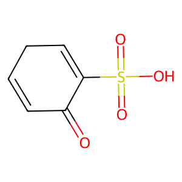 | O=C1C=CCC=C1S(=O)(=O)O | Anthrone formation step1 | |
 | O=C1C=CC(=O)C(S(=O)(=O)O)=C1 | | O=C1C=CCC(S(=O)(=O)O)=C1 | Anthrone formation step1 | |
 | O=C1C=CC(=O)c2c1cccc2S(=O)(=O)O | | O=C1C=CCc2cccc(S(=O)(=O)O)c21 | Anthrone formation step1 | |
 | O=C1C=CC(=O)c2c1cccc2S(=O)(=O)O | | O=C1C=CCc2c1cccc2S(=O)(=O)O | Anthrone formation step1 | |
 | O=C1C=CC(=O)c2cc(S(=O)(=O)O)ccc21 |  | O=C1C=CCc2cc(S(=O)(=O)O)ccc21 | Anthrone formation step1 | |
 | O=C1C=CC(=O)c2cc(S(=O)(=O)O)ccc21 | | O=C1C=CCc2ccc(S(=O)(=O)O)cc21 | Anthrone formation step1 | |
 | O=C1C=C(S(=O)(=O)O)C(=O)c2ccccc21 | | O=C1C=C(S(=O)(=O)O)Cc2ccccc21 | Anthrone formation step1 | |
 | O=C1C=C(S(=O)(=O)O)C(=O)c2ccccc21 | | O=C1C(S(=O)(=O)O)=CCc2ccccc21 | Anthrone formation step1 | |
 | O=c1ccc(=O)c2c(=O)c(S(=O)(=O)O)cc(=O)c1=2 | | O=C1C=CC(=O)C2=C1CC=C(S(=O)(=O)O)C2=O | Anthrone formation step1 | |
 | O=c1ccc(=O)c2c(=O)c(S(=O)(=O)O)cc(=O)c1=2 | | O=C1C=CC(=O)C2=C1CC(S(=O)(=O)O)=CC2=O | Anthrone formation step1 | |
 | O=c1ccc(=O)c2c(=O)c(S(=O)(=O)O)cc(=O)c1=2 | | O=C1C=CCC2=C1C(=O)C=C(S(=O)(=O)O)C2=O | Anthrone formation step1 | |
 | O=c1ccc(=O)c2c(=O)c(S(=O)(=O)O)cc(=O)c1=2 | | O=C1C=C(S(=O)(=O)O)C(=O)C2=C1CC=CC2=O | Anthrone formation step1 | |
 | O=C1c2ccccc2C(=O)c2c1cccc2S(=O)(=O)O | | O=C1c2ccccc2Cc2c1cccc2S(=O)(=O)O | Anthrone formation step1 | |
 | O=C1c2ccccc2C(=O)c2c1cccc2S(=O)(=O)O | | O=C1c2ccccc2Cc2cccc(S(=O)(=O)O)c21 | Anthrone formation step1 | |
 | O=C1c2ccccc2C(=O)c2cc(S(=O)(=O)O)ccc21 | | O=C1c2ccccc2Cc2cc(S(=O)(=O)O)ccc21 | Anthrone formation step1 | |
 | O=C1c2ccccc2C(=O)c2cc(S(=O)(=O)O)ccc21 | | O=C1c2ccccc2Cc2ccc(S(=O)(=O)O)cc21 | Anthrone formation step1 | |
 | O=C1C=CC(=O)c2c1cc1ccccc1c2S(=O)(=O)O | | O=C1C=CCc2c1cc1ccccc1c2S(=O)(=O)O | Anthrone formation step1 | |
 | O=C1C=CC(=O)c2c1cc1ccccc1c2S(=O)(=O)O | | O=C1C=CCc2cc3ccccc3c(S(=O)(=O)O)c21 | Anthrone formation step1 | |
 | O=C1C=CC(=O)c2cc3c(S(=O)(=O)O)cccc3cc21 | | O=C1C=CCc2cc3c(S(=O)(=O)O)cccc3cc21 | Anthrone formation step1 | |
 | O=C1C=CC(=O)c2cc3c(S(=O)(=O)O)cccc3cc21 | | O=C1C=CCc2cc3cccc(S(=O)(=O)O)c3cc21 | Anthrone formation step1 | |
 | O=C1C=CC(=O)c2cc3cc(S(=O)(=O)O)ccc3cc21 | | O=C1C=CCc2cc3cc(S(=O)(=O)O)ccc3cc21 | Anthrone formation step1 | |
 | O=C1C=CC(=O)c2cc3cc(S(=O)(=O)O)ccc3cc21 | | O=C1C=CCc2cc3ccc(S(=O)(=O)O)cc3cc21 | Anthrone formation step1 | |
| O=C1C=C(S(=O)(=O)O)C(=O)c2cc3ccccc3cc21 | | O=C1C=C(S(=O)(=O)O)Cc2cc3ccccc3cc21 | Anthrone formation step1 | |
 | O=C1C=C(S(=O)(=O)O)C(=O)c2cc3ccccc3cc21 | | O=C1C(S(=O)(=O)O)=CCc2cc3ccccc3cc21 | Anthrone formation step1 | |
 | O=c1ccc(=O)c2c(=O)c3c(S(=O)(=O)O)cccc3c(=O)c1=2 | | O=C1C=CC(=O)C2=C1Cc1cccc(S(=O)(=O)O)c1C2=O | Anthrone formation step1 | |
 | O=c1ccc(=O)c2c(=O)c3c(S(=O)(=O)O)cccc3c(=O)c1=2 | | O=C1C=CCC2=C1C(=O)c1c(cccc1S(=O)(=O)O)C2=O | Anthrone formation step1 | |
 | O=c1ccc(=O)c2c(=O)c3c(S(=O)(=O)O)cccc3c(=O)c1=2 | | O=C1C=CCC2=C1C(=O)c1cccc(S(=O)(=O)O)c1C2=O | Anthrone formation step1 | |
| O=c1ccc(=O)c2c(=O)c3c(S(=O)(=O)O)cccc3c(=O)c1=2 | | O=C1C=CC(=O)C2=C1Cc1c(cccc1S(=O)(=O)O)C2=O | Anthrone formation step1 | |
 | O=c1ccc(=O)c2c(=O)c3cc(S(=O)(=O)O)ccc3c(=O)c1=2 | | O=C1C=CC(=O)C2=C1Cc1ccc(S(=O)(=O)O)cc1C2=O | Anthrone formation step1 | |
 | O=c1ccc(=O)c2c(=O)c3cc(S(=O)(=O)O)ccc3c(=O)c1=2 | | O=C1C=CCC2=C1C(=O)c1ccc(S(=O)(=O)O)cc1C2=O | Anthrone formation step1 | |
 | O=c1ccc(=O)c2c(=O)c3cc(S(=O)(=O)O)ccc3c(=O)c1=2 | | O=C1C=CCC2=C1C(=O)c1cc(S(=O)(=O)O)ccc1C2=O | Anthrone formation step1 | |
 | O=c1ccc(=O)c2c(=O)c3cc(S(=O)(=O)O)ccc3c(=O)c1=2 | | O=C1C=CC(=O)C2=C1Cc1cc(S(=O)(=O)O)ccc1C2=O | Anthrone formation step1 | |
 | O=c1cc(S(=O)(=O)O)c(=O)c2c(=O)c3ccccc3c(=O)c1=2 | | O=C1C=C(S(=O)(=O)O)CC2=C1C(=O)c1ccccc1C2=O | Anthrone formation step1 | |
 | O=c1cc(S(=O)(=O)O)c(=O)c2c(=O)c3ccccc3c(=O)c1=2 | | O=C1C(S(=O)(=O)O)=CCC2=C1C(=O)c1ccccc1C2=O | Anthrone formation step1 | |
 | O=c1cc(S(=O)(=O)O)c(=O)c2c(=O)c3ccccc3c(=O)c1=2 | | O=C1C=C(S(=O)(=O)O)C(=O)C2=C1C(=O)c1ccccc1C2 | Anthrone formation step1 | |
 | O=c1cc(S(=O)(=O)O)c(=O)c2c(=O)c3ccccc3c(=O)c1=2 | | O=C1C=C(S(=O)(=O)O)C(=O)C2=C1Cc1ccccc1C2=O | Anthrone formation step1 | |
 | O=c1ccc(=O)c2c(S(=O)(=O)O)c3c(=O)ccc(=O)c3cc12 | | O=C1C=CC(=O)c2c1cc1c(c2S(=O)(=O)O)C(=O)C=CC1 | Anthrone formation step1 | |
| 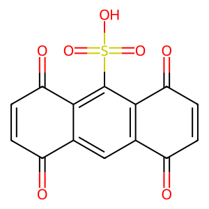 | O=c1ccc(=O)c2c(S(=O)(=O)O)c3c(=O)ccc(=O)c3cc12 | | O=C1C=CCc2c1cc1c(c2S(=O)(=O)O)C(=O)C=CC1=O | Anthrone formation step1 | |
 | O=c1ccc(=O)c2cc3c(=O)c(S(=O)(=O)O)cc(=O)c3cc12 | | O=C1C=C(S(=O)(=O)O)Cc2cc3c(cc21)C(=O)C=CC3=O | Anthrone formation step1 | |
 | O=c1ccc(=O)c2cc3c(=O)c(S(=O)(=O)O)cc(=O)c3cc12 | | O=C1C=CCc2cc3c(cc21)C(=O)C(S(=O)(=O)O)=CC3=O | Anthrone formation step1 | |
 | O=c1ccc(=O)c2cc3c(=O)c(S(=O)(=O)O)cc(=O)c3cc12 | | O=C1C(S(=O)(=O)O)=CCc2cc3c(cc21)C(=O)C=CC3=O | Anthrone formation step1 | |
 | O=c1ccc(=O)c2cc3c(=O)c(S(=O)(=O)O)cc(=O)c3cc12 | | O=C1C=CCc2cc3c(cc21)C(=O)C=C(S(=O)(=O)O)C3=O | Anthrone formation step1 | |
 | O=C1C=CC(=O)C(C(=O)O)=C1 | 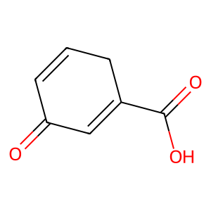 | O=C1C=CCC(C(=O)O)=C1 | Anthrone formation step1 | |
 | O=C1C=CC(=O)C(C(=O)O)=C1 | 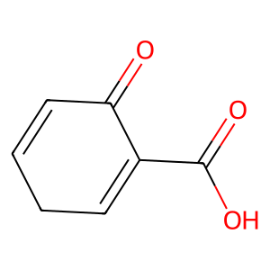 | O=C(O)C1=CCC=CC1=O | Anthrone formation step1 | |
 | O=C(O)c1cccc2c1C(=O)C=CC2=O | | O=C(O)c1cccc2c1CC=CC2=O | Anthrone formation step1 | |
 | O=C(O)c1cccc2c1C(=O)C=CC2=O | 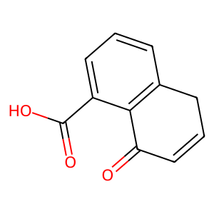 | O=C(O)c1cccc2c1C(=O)C=CC2 | Anthrone formation step1 | |
 | O=C(O)c1ccc2c(c1)C(=O)C=CC2=O | | O=C(O)c1ccc2c(c1)CC=CC2=O | Anthrone formation step1 | |
 | O=C(O)c1ccc2c(c1)C(=O)C=CC2=O | | O=C(O)c1ccc2c(c1)C(=O)C=CC2 | Anthrone formation step1 | |
 | O=C(O)C1=CC(=O)c2ccccc2C1=O | 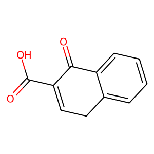 | O=C(O)C1=CCc2ccccc2C1=O | Anthrone formation step1 | |
 | O=C(O)C1=CC(=O)c2ccccc2C1=O | | O=C(O)C1=CC(=O)c2ccccc2C1 | Anthrone formation step1 | |
 | O=C(O)c1cc(=O)c2c(=O)ccc(=O)c=2c1=O | | O=C(O)C1=CC(=O)C2=C(CC=CC2=O)C1=O | Anthrone formation step1 | |
 | O=C(O)c1cc(=O)c2c(=O)ccc(=O)c=2c1=O | | O=C(O)C1=CC(=O)C2=C(C(=O)C=CC2)C1=O | Anthrone formation step1 | |
 | O=C(O)c1cc(=O)c2c(=O)ccc(=O)c=2c1=O | | O=C(O)C1=CC(=O)C2=C(C1)C(=O)C=CC2=O | Anthrone formation step1 | |
 | O=C(O)c1cc(=O)c2c(=O)ccc(=O)c=2c1=O | | O=C(O)C1=CCC2=C(C(=O)C=CC2=O)C1=O | Anthrone formation step1 | |
 | O=C(O)c1ccc2c(c1)C(=O)c1ccccc1C2=O | | O=C(O)c1ccc2c(c1)Cc1ccccc1C2=O | Anthrone formation step1 | |
 | O=C(O)c1ccc2c(c1)C(=O)c1ccccc1C2=O | | O=C(O)c1ccc2c(c1)C(=O)c1ccccc1C2 | Anthrone formation step1 | |
 | O=C(O)c1cccc2c1C(=O)c1ccccc1C2=O | | O=C(O)c1cccc2c1C(=O)c1ccccc1C2 | Anthrone formation step1 | |
 | O=C(O)c1cccc2c1C(=O)c1ccccc1C2=O | | O=C(O)c1cccc2c1Cc1ccccc1C2=O | Anthrone formation step1 | |
 | O=C1C=CC(=O)c2c1cc1ccccc1c2C(=O)O | | O=C1C=CCc2c1cc1ccccc1c2C(=O)O | Anthrone formation step1 | |
 | O=C1C=CC(=O)c2c1cc1ccccc1c2C(=O)O | | O=C1C=CCc2cc3ccccc3c(C(=O)O)c21 | Anthrone formation step1 | |
 | O=C1C=CC(=O)c2cc3c(C(=O)O)cccc3cc21 | | O=C1C=CCc2cc3c(C(=O)O)cccc3cc21 | Anthrone formation step1 | |
 | O=C1C=CC(=O)c2cc3c(C(=O)O)cccc3cc21 | 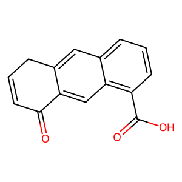 | O=C1C=CCc2cc3cccc(C(=O)O)c3cc21 | Anthrone formation step1 | |
 | O=C(O)c1ccc2cc3c(cc2c1)C(=O)C=CC3=O | | O=C(O)c1ccc2cc3c(cc2c1)CC=CC3=O | Anthrone formation step1 | |
 | O=C(O)c1ccc2cc3c(cc2c1)C(=O)C=CC3=O | | O=C(O)c1ccc2cc3c(cc2c1)C(=O)C=CC3 | Anthrone formation step1 | |
 | O=C(O)C1=CC(=O)c2cc3ccccc3cc2C1=O | | O=C(O)C1=CCc2cc3ccccc3cc2C1=O | Anthrone formation step1 | |
 | O=C(O)C1=CC(=O)c2cc3ccccc3cc2C1=O | | O=C(O)C1=CC(=O)c2cc3ccccc3cc2C1 | Anthrone formation step1 | |
 | O=C(O)c1cccc2c(=O)c3c(=O)ccc(=O)c=3c(=O)c12 | | O=C1C=CCC2=C1C(=O)c1cccc(C(=O)O)c1C2=O | Anthrone formation step1 | |
 | O=C(O)c1cccc2c(=O)c3c(=O)ccc(=O)c=3c(=O)c12 | | O=C1C=CC(=O)C2=C1Cc1cccc(C(=O)O)c1C2=O | Anthrone formation step1 | |
 | O=C(O)c1cccc2c(=O)c3c(=O)ccc(=O)c=3c(=O)c12 | | O=C1C=CCC2=C1C(=O)c1c(C(=O)O)cccc1C2=O | Anthrone formation step1 | |
 | O=C(O)c1cccc2c(=O)c3c(=O)ccc(=O)c=3c(=O)c12 | | O=C1C=CC(=O)C2=C1Cc1c(C(=O)O)cccc1C2=O | Anthrone formation step1 | |
 | O=C(O)c1ccc2c(=O)c3c(=O)ccc(=O)c=3c(=O)c2c1 | | O=C1C=CC(=O)C2=C1Cc1ccc(C(=O)O)cc1C2=O | Anthrone formation step1 | |
 | O=C(O)c1ccc2c(=O)c3c(=O)ccc(=O)c=3c(=O)c2c1 | | O=C1C=CCC2=C1C(=O)c1ccc(C(=O)O)cc1C2=O | Anthrone formation step1 | |
 | O=C(O)c1ccc2c(=O)c3c(=O)ccc(=O)c=3c(=O)c2c1 | | O=C1C=CC(=O)C2=C1Cc1cc(C(=O)O)ccc1C2=O | Anthrone formation step1 | |
 | O=C(O)c1ccc2c(=O)c3c(=O)ccc(=O)c=3c(=O)c2c1 | | O=C1C=CCC2=C1C(=O)c1cc(C(=O)O)ccc1C2=O | Anthrone formation step1 | |
 | O=C(O)c1cc(=O)c2c(=O)c3ccccc3c(=O)c=2c1=O | | O=C(O)C1=CC(=O)C2=C(C1)C(=O)c1ccccc1C2=O | Anthrone formation step1 | |
 | O=C(O)c1cc(=O)c2c(=O)c3ccccc3c(=O)c=2c1=O | | O=C(O)C1=CC(=O)C2=C(Cc3ccccc3C2=O)C1=O | Anthrone formation step1 | |
 | O=C(O)c1cc(=O)c2c(=O)c3ccccc3c(=O)c=2c1=O | | O=C(O)C1=CCC2=C(C1=O)C(=O)c1ccccc1C2=O | Anthrone formation step1 | |
 | O=C(O)c1cc(=O)c2c(=O)c3ccccc3c(=O)c=2c1=O | | O=C(O)C1=CC(=O)C2=C(C1=O)C(=O)c1ccccc1C2 | Anthrone formation step1 | |
 | O=C(O)c1c2c(=O)ccc(=O)c2cc2c(=O)ccc(=O)c12 | | O=C1C=CC(=O)c2c1cc1c(c2C(=O)O)C(=O)C=CC1 | Anthrone formation step1 | |
 | O=C(O)c1c2c(=O)ccc(=O)c2cc2c(=O)ccc(=O)c12 | | O=C1C=CCc2c1cc1c(c2C(=O)O)C(=O)C=CC1=O | Anthrone formation step1 | |
 | O=C(O)c1cc(=O)c2cc3c(=O)ccc(=O)c3cc2c1=O | | O=C(O)C1=CCc2cc3c(cc2C1=O)C(=O)C=CC3=O | Anthrone formation step1 | |
 | O=C(O)c1cc(=O)c2cc3c(=O)ccc(=O)c3cc2c1=O | | O=C(O)C1=CC(=O)c2cc3c(cc2C1)C(=O)C=CC3=O | Anthrone formation step1 | |
 | O=C(O)c1cc(=O)c2cc3c(=O)ccc(=O)c3cc2c1=O | | O=C(O)C1=CC(=O)c2cc3c(cc2C1=O)C(=O)C=CC3 | Anthrone formation step1 | |
 | O=C(O)c1cc(=O)c2cc3c(=O)ccc(=O)c3cc2c1=O |  | O=C(O)C1=CC(=O)c2cc3c(cc2C1=O)CC=CC3=O | Anthrone formation step1 | |
 | O=C1C=CC(=O)C(O)=C1 | | O=C1C=CCC=C1O | Anthrone formation step1 | |
| 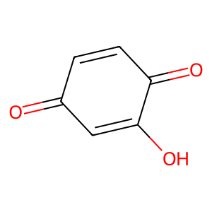 | O=C1C=CC(=O)C(O)=C1 | | O=C1C=CCC(O)=C1 | Anthrone formation step1 | |
 | O=C1C=CC(=O)c2c(O)cccc21 | | O=C1C=CCc2c(O)cccc21 | Anthrone formation step1 | |
 | O=C1C=CC(=O)c2c(O)cccc21 | | O=C1C=CCc2cccc(O)c21 | Anthrone formation step1 | |
 | O=C1C=CC(=O)c2cc(O)ccc21 | | O=C1C=CCc2ccc(O)cc21 | Anthrone formation step1 | |
 | O=C1C=CC(=O)c2cc(O)ccc21 | | O=C1C=CCc2cc(O)ccc21 | Anthrone formation step1 | |
 | O=C1C=C(O)C(=O)c2ccccc21 | | O=C1C=C(O)Cc2ccccc21 | Anthrone formation step1 | |
 | O=C1C=C(O)C(=O)c2ccccc21 | | O=C1C(O)=CCc2ccccc21 | Anthrone formation step1 | |
 | O=c1ccc(=O)c2c(=O)c(O)cc(=O)c1=2 | | O=C1C=CCC2=C1C(=O)C=C(O)C2=O | Anthrone formation step1 | |
 | O=c1ccc(=O)c2c(=O)c(O)cc(=O)c1=2 | | O=C1C=CC(=O)C2=C1CC(O)=CC2=O | Anthrone formation step1 | |
 | O=c1ccc(=O)c2c(=O)c(O)cc(=O)c1=2 | | O=C1C=CC(=O)C2=C1CC=C(O)C2=O | Anthrone formation step1 | |
 | O=c1ccc(=O)c2c(=O)c(O)cc(=O)c1=2 | | O=C1C=C(O)C(=O)C2=C1CC=CC2=O | Anthrone formation step1 | |
 | O=C1c2ccccc2C(=O)c2cc(O)ccc21 | | O=C1c2ccccc2Cc2ccc(O)cc21 | Anthrone formation step1 | |
 | O=C1c2ccccc2C(=O)c2cc(O)ccc21 | | O=C1c2ccccc2Cc2cc(O)ccc21 | Anthrone formation step1 | |
 | O=C1c2ccccc2C(=O)c2c(O)cccc21 | | O=C1c2ccccc2Cc2c(O)cccc21 | Anthrone formation step1 | |
| 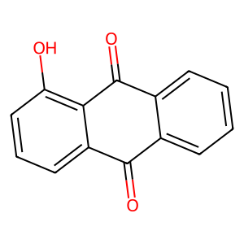 | O=C1c2ccccc2C(=O)c2c(O)cccc21 | | O=C1c2ccccc2Cc2cccc(O)c21 | Anthrone formation step1 | |
 | O=C1C=CC(=O)c2c1cc1ccccc1c2O | | O=C1C=CCc2cc3ccccc3c(O)c21 | Anthrone formation step1 | |
 | O=C1C=CC(=O)c2c1cc1ccccc1c2O | | O=C1C=CCc2c1cc1ccccc1c2O | Anthrone formation step1 | |
 | O=C1C=CC(=O)c2cc3c(O)cccc3cc21 | | O=C1C=CCc2cc3c(O)cccc3cc21 | Anthrone formation step1 | |
 | O=C1C=CC(=O)c2cc3c(O)cccc3cc21 | | O=C1C=CCc2cc3cccc(O)c3cc21 | Anthrone formation step1 | |
 | O=C1C=CC(=O)c2cc3cc(O)ccc3cc21 | | O=C1C=CCc2cc3cc(O)ccc3cc21 | Anthrone formation step1 | |
 | O=C1C=CC(=O)c2cc3cc(O)ccc3cc21 | | O=C1C=CCc2cc3ccc(O)cc3cc21 | Anthrone formation step1 | |
 | O=C1C=C(O)C(=O)c2cc3ccccc3cc21 | | O=C1C(O)=CCc2cc3ccccc3cc21 | Anthrone formation step1 | |
 | O=C1C=C(O)C(=O)c2cc3ccccc3cc21 | | O=C1C=C(O)Cc2cc3ccccc3cc21 | Anthrone formation step1 | |
 | O=c1ccc(=O)c2c(=O)c3c(O)cccc3c(=O)c1=2 | | O=C1C=CCC2=C1C(=O)c1cccc(O)c1C2=O | Anthrone formation step1 | |
 | O=c1ccc(=O)c2c(=O)c3c(O)cccc3c(=O)c1=2 | | O=C1C=CC(=O)C2=C1Cc1cccc(O)c1C2=O | Anthrone formation step1 | |
 | O=c1ccc(=O)c2c(=O)c3c(O)cccc3c(=O)c1=2 | | O=C1C=CCC2=C1C(=O)c1c(O)cccc1C2=O | Anthrone formation step1 | |
 | O=c1ccc(=O)c2c(=O)c3c(O)cccc3c(=O)c1=2 | | O=C1C=CC(=O)C2=C1Cc1c(O)cccc1C2=O | Anthrone formation step1 | |
 | O=c1ccc(=O)c2c(=O)c3cc(O)ccc3c(=O)c1=2 | | O=C1C=CC(=O)C2=C1Cc1cc(O)ccc1C2=O | Anthrone formation step1 | |
 | O=c1ccc(=O)c2c(=O)c3cc(O)ccc3c(=O)c1=2 | | O=C1C=CCC2=C1C(=O)c1ccc(O)cc1C2=O | Anthrone formation step1 | |
 | O=c1ccc(=O)c2c(=O)c3cc(O)ccc3c(=O)c1=2 | 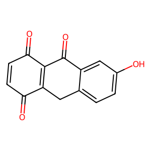 | O=C1C=CC(=O)C2=C1Cc1ccc(O)cc1C2=O | Anthrone formation step1 | |
 | O=c1ccc(=O)c2c(=O)c3cc(O)ccc3c(=O)c1=2 | | O=C1C=CCC2=C1C(=O)c1cc(O)ccc1C2=O | Anthrone formation step1 | |
| 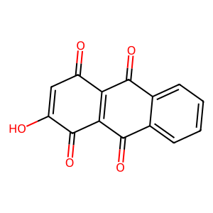 | O=c1cc(O)c(=O)c2c(=O)c3ccccc3c(=O)c1=2 | | O=C1C=C(O)C(=O)C2=C1C(=O)c1ccccc1C2 | Anthrone formation step1 | |
 | O=c1cc(O)c(=O)c2c(=O)c3ccccc3c(=O)c1=2 | | O=C1C(O)=CCC2=C1C(=O)c1ccccc1C2=O | Anthrone formation step1 | |
 | O=c1cc(O)c(=O)c2c(=O)c3ccccc3c(=O)c1=2 | | O=C1C=C(O)C(=O)C2=C1Cc1ccccc1C2=O | Anthrone formation step1 | |
 | O=c1cc(O)c(=O)c2c(=O)c3ccccc3c(=O)c1=2 | | O=C1C=C(O)CC2=C1C(=O)c1ccccc1C2=O | Anthrone formation step1 | |
 | O=c1ccc(=O)c2c(O)c3c(=O)ccc(=O)c3cc12 | | O=C1C=CCc2c1cc1c(c2O)C(=O)C=CC1=O | Anthrone formation step1 | |
 | O=c1ccc(=O)c2c(O)c3c(=O)ccc(=O)c3cc12 | | O=C1C=CC(=O)c2c1cc1c(c2O)C(=O)C=CC1 | Anthrone formation step1 | |
 | O=c1ccc(=O)c2cc3c(=O)c(O)cc(=O)c3cc12 | 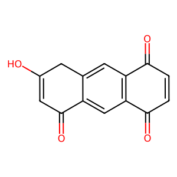 | O=C1C=C(O)Cc2cc3c(cc21)C(=O)C=CC3=O | Anthrone formation step1 | |
 | O=c1ccc(=O)c2cc3c(=O)c(O)cc(=O)c3cc12 | | O=C1C=CCc2cc3c(cc21)C(=O)C(O)=CC3=O | Anthrone formation step1 | |
 | O=c1ccc(=O)c2cc3c(=O)c(O)cc(=O)c3cc12 |  | O=C1C=CCc2cc3c(cc21)C(=O)C=C(O)C3=O | Anthrone formation step1 | |
 | O=c1ccc(=O)c2cc3c(=O)c(O)cc(=O)c3cc12 | | O=C1C(O)=CCc2cc3c(cc21)C(=O)C=CC3=O | Anthrone formation step1 | |
 | NC1=CC(=O)C=CC1=O | 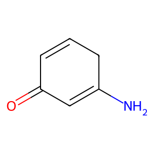 | NC1=CC(=O)C=CC1 | Anthrone formation step1 | |
 | NC1=CC(=O)C=CC1=O | | NC1=CCC=CC1=O | Anthrone formation step1 | |
 | Nc1cccc2c1C(=O)C=CC2=O | | Nc1cccc2c1C(=O)C=CC2 | Anthrone formation step1 | |
 | Nc1cccc2c1C(=O)C=CC2=O |  | Nc1cccc2c1CC=CC2=O | Anthrone formation step1 | |
 | Nc1ccc2c(c1)C(=O)C=CC2=O | | Nc1ccc2c(c1)CC=CC2=O | Anthrone formation step1 | |
 | Nc1ccc2c(c1)C(=O)C=CC2=O | | Nc1ccc2c(c1)C(=O)C=CC2 | Anthrone formation step1 | |
 | NC1=CC(=O)c2ccccc2C1=O | | NC1=CC(=O)c2ccccc2C1 | Anthrone formation step1 | |
 | NC1=CC(=O)c2ccccc2C1=O | | NC1=CCc2ccccc2C1=O | Anthrone formation step1 | |
 | Nc1cc(=O)c2c(=O)ccc(=O)c=2c1=O | | NC1=CCC2=C(C(=O)C=CC2=O)C1=O | Anthrone formation step1 | |
 | Nc1cc(=O)c2c(=O)ccc(=O)c=2c1=O | | NC1=CC(=O)C2=C(C1)C(=O)C=CC2=O | Anthrone formation step1 | |
 | Nc1cc(=O)c2c(=O)ccc(=O)c=2c1=O | | NC1=CC(=O)C2=C(C(=O)C=CC2)C1=O | Anthrone formation step1 | |
 | Nc1cc(=O)c2c(=O)ccc(=O)c=2c1=O | | NC1=CC(=O)C2=C(CC=CC2=O)C1=O | Anthrone formation step1 | |
 | Nc1ccc2c(c1)C(=O)c1ccccc1C2=O | | Nc1ccc2c(c1)Cc1ccccc1C2=O | Anthrone formation step1 | |
 | Nc1ccc2c(c1)C(=O)c1ccccc1C2=O | | Nc1ccc2c(c1)C(=O)c1ccccc1C2 | Anthrone formation step1 | |
 | Nc1cccc2c1C(=O)c1ccccc1C2=O | | Nc1cccc2c1C(=O)c1ccccc1C2 | Anthrone formation step1 | |
 | Nc1cccc2c1C(=O)c1ccccc1C2=O | | Nc1cccc2c1Cc1ccccc1C2=O | Anthrone formation step1 | |
 | Nc1c2c(cc3ccccc13)C(=O)C=CC2=O |  | Nc1c2c(cc3ccccc13)C(=O)C=CC2 | Anthrone formation step1 | |
 | Nc1c2c(cc3ccccc13)C(=O)C=CC2=O | | Nc1c2c(cc3ccccc13)CC=CC2=O | Anthrone formation step1 | |
 | Nc1cccc2cc3c(cc12)C(=O)C=CC3=O | | Nc1cccc2cc3c(cc12)C(=O)C=CC3 | Anthrone formation step1 | |
 | Nc1cccc2cc3c(cc12)C(=O)C=CC3=O | | Nc1cccc2cc3c(cc12)CC=CC3=O | Anthrone formation step1 | |
 | Nc1ccc2cc3c(cc2c1)C(=O)C=CC3=O | | Nc1ccc2cc3c(cc2c1)CC=CC3=O | Anthrone formation step1 | |
 | Nc1ccc2cc3c(cc2c1)C(=O)C=CC3=O | | Nc1ccc2cc3c(cc2c1)C(=O)C=CC3 | Anthrone formation step1 | |
| 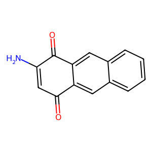 | NC1=CC(=O)c2cc3ccccc3cc2C1=O | | NC1=CC(=O)c2cc3ccccc3cc2C1 | Anthrone formation step1 | |
 | NC1=CC(=O)c2cc3ccccc3cc2C1=O | | NC1=CCc2cc3ccccc3cc2C1=O | Anthrone formation step1 | |
 | Nc1cccc2c(=O)c3c(=O)ccc(=O)c=3c(=O)c12 | | Nc1cccc2c1C(=O)C1=C(C2)C(=O)C=CC1=O | Anthrone formation step1 | |
 | Nc1cccc2c(=O)c3c(=O)ccc(=O)c=3c(=O)c12 | | Nc1cccc2c1C(=O)C1=C(CC=CC1=O)C2=O | Anthrone formation step1 | |
 | Nc1cccc2c(=O)c3c(=O)ccc(=O)c=3c(=O)c12 | | Nc1cccc2c1CC1=C(C(=O)C=CC1=O)C2=O | Anthrone formation step1 | |
 | Nc1cccc2c(=O)c3c(=O)ccc(=O)c=3c(=O)c12 | | Nc1cccc2c1C(=O)C1=C(C(=O)C=CC1)C2=O | Anthrone formation step1 | |
 | Nc1ccc2c(=O)c3c(=O)ccc(=O)c=3c(=O)c2c1 | | Nc1ccc2c(c1)C(=O)C1=C(C2)C(=O)C=CC1=O | Anthrone formation step1 | |
 | Nc1ccc2c(=O)c3c(=O)ccc(=O)c=3c(=O)c2c1 | 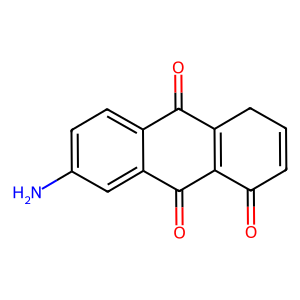 | Nc1ccc2c(c1)C(=O)C1=C(CC=CC1=O)C2=O | Anthrone formation step1 | |
 | Nc1ccc2c(=O)c3c(=O)ccc(=O)c=3c(=O)c2c1 | | Nc1ccc2c(c1)C(=O)C1=C(C(=O)C=CC1)C2=O | Anthrone formation step1 | |
| 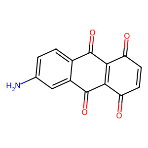 | Nc1ccc2c(=O)c3c(=O)ccc(=O)c=3c(=O)c2c1 | | Nc1ccc2c(c1)CC1=C(C(=O)C=CC1=O)C2=O | Anthrone formation step1 | |
 | Nc1cc(=O)c2c(=O)c3ccccc3c(=O)c=2c1=O | | NC1=CC(=O)C2=C(C1)C(=O)c1ccccc1C2=O | Anthrone formation step1 | |
 | Nc1cc(=O)c2c(=O)c3ccccc3c(=O)c=2c1=O | | NC1=CC(=O)C2=C(C1=O)C(=O)c1ccccc1C2 | Anthrone formation step1 | |
 | Nc1cc(=O)c2c(=O)c3ccccc3c(=O)c=2c1=O | | NC1=CC(=O)C2=C(Cc3ccccc3C2=O)C1=O | Anthrone formation step1 | |
 | Nc1cc(=O)c2c(=O)c3ccccc3c(=O)c=2c1=O | | NC1=CCC2=C(C1=O)C(=O)c1ccccc1C2=O | Anthrone formation step1 | |
 | Nc1c2c(=O)ccc(=O)c2cc2c(=O)ccc(=O)c12 | | Nc1c2c(cc3c1C(=O)C=CC3=O)C(=O)C=CC2 | Anthrone formation step1 | |
 | Nc1c2c(=O)ccc(=O)c2cc2c(=O)ccc(=O)c12 | | Nc1c2c(cc3c1C(=O)C=CC3=O)CC=CC2=O | Anthrone formation step1 | |
 | Nc1cc(=O)c2cc3c(=O)ccc(=O)c3cc2c1=O | | NC1=CCc2cc3c(cc2C1=O)C(=O)C=CC3=O | Anthrone formation step1 | |
 | Nc1cc(=O)c2cc3c(=O)ccc(=O)c3cc2c1=O | | NC1=CC(=O)c2cc3c(cc2C1=O)CC=CC3=O | Anthrone formation step1 | |
 | Nc1cc(=O)c2cc3c(=O)ccc(=O)c3cc2c1=O | | NC1=CC(=O)c2cc3c(cc2C1=O)C(=O)C=CC3 | Anthrone formation step1 | |
 | Nc1cc(=O)c2cc3c(=O)ccc(=O)c3cc2c1=O | | NC1=CC(=O)c2cc3c(cc2C1)C(=O)C=CC3=O | Anthrone formation step1 | |
| 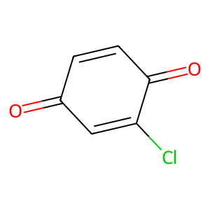 | O=C1C=CC(=O)C(Cl)=C1 | | O=C1C=CCC=C1Cl | Anthrone formation step1 | |
 | O=C1C=CC(=O)C(Cl)=C1 | | O=C1C=CCC(Cl)=C1 | Anthrone formation step1 | |
| 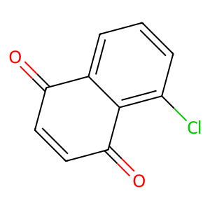 | O=C1C=CC(=O)c2c(Cl)cccc21 | | O=C1C=CCc2cccc(Cl)c21 | Anthrone formation step1 | |
 | O=C1C=CC(=O)c2c(Cl)cccc21 | | O=C1C=CCc2c(Cl)cccc21 | Anthrone formation step1 | |
 | O=C1C=CC(=O)c2cc(Cl)ccc21 | | O=C1C=CCc2ccc(Cl)cc21 | Anthrone formation step1 | |
 | O=C1C=CC(=O)c2cc(Cl)ccc21 |  | O=C1C=CCc2cc(Cl)ccc21 | Anthrone formation step1 | |
 | O=C1C=C(Cl)C(=O)c2ccccc21 | | O=C1C=C(Cl)Cc2ccccc21 | Anthrone formation step1 | |
 | O=C1C=C(Cl)C(=O)c2ccccc21 | | O=C1C(Cl)=CCc2ccccc21 | Anthrone formation step1 | |
 | O=c1ccc(=O)c2c(=O)c(Cl)cc(=O)c1=2 | | O=C1C=CC(=O)C2=C1CC=C(Cl)C2=O | Anthrone formation step1 | |
 | O=c1ccc(=O)c2c(=O)c(Cl)cc(=O)c1=2 | | O=C1C=CC(=O)C2=C1CC(Cl)=CC2=O | Anthrone formation step1 | |
 | O=c1ccc(=O)c2c(=O)c(Cl)cc(=O)c1=2 | | O=C1C=C(Cl)C(=O)C2=C1CC=CC2=O | Anthrone formation step1 | |
 | O=c1ccc(=O)c2c(=O)c(Cl)cc(=O)c1=2 | | O=C1C=CCC2=C1C(=O)C=C(Cl)C2=O | Anthrone formation step1 | |
 | O=C1c2ccccc2C(=O)c2cc(Cl)ccc21 | | O=C1c2ccccc2Cc2cc(Cl)ccc21 | Anthrone formation step1 | |
 | O=C1c2ccccc2C(=O)c2cc(Cl)ccc21 | | O=C1c2ccccc2Cc2ccc(Cl)cc21 | Anthrone formation step1 | |
 | O=C1c2ccccc2C(=O)c2c(Cl)cccc21 | | O=C1c2ccccc2Cc2cccc(Cl)c21 | Anthrone formation step1 | |
 | O=C1c2ccccc2C(=O)c2c(Cl)cccc21 | | O=C1c2ccccc2Cc2c(Cl)cccc21 | Anthrone formation step1 | |
 | O=C1C=CC(=O)c2c1cc1ccccc1c2Cl | | O=C1C=CCc2c1cc1ccccc1c2Cl | Anthrone formation step1 | |
 | O=C1C=CC(=O)c2c1cc1ccccc1c2Cl | | O=C1C=CCc2cc3ccccc3c(Cl)c21 | Anthrone formation step1 | |
 | O=C1C=CC(=O)c2cc3c(Cl)cccc3cc21 | | O=C1C=CCc2cc3cccc(Cl)c3cc21 | Anthrone formation step1 | |
| 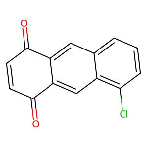 | O=C1C=CC(=O)c2cc3c(Cl)cccc3cc21 | | O=C1C=CCc2cc3c(Cl)cccc3cc21 | Anthrone formation step1 | |
 | O=C1C=CC(=O)c2cc3cc(Cl)ccc3cc21 | | O=C1C=CCc2cc3cc(Cl)ccc3cc21 | Anthrone formation step1 | |
 | O=C1C=CC(=O)c2cc3cc(Cl)ccc3cc21 | | O=C1C=CCc2cc3ccc(Cl)cc3cc21 | Anthrone formation step1 | |
 | O=C1C=C(Cl)C(=O)c2cc3ccccc3cc21 | 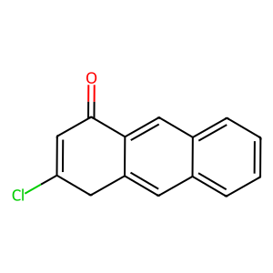 | O=C1C=C(Cl)Cc2cc3ccccc3cc21 | Anthrone formation step1 | |
 | O=C1C=C(Cl)C(=O)c2cc3ccccc3cc21 | | O=C1C(Cl)=CCc2cc3ccccc3cc21 | Anthrone formation step1 | |
 | O=c1ccc(=O)c2c(=O)c3c(Cl)cccc3c(=O)c1=2 | | O=C1C=CC(=O)C2=C1Cc1c(Cl)cccc1C2=O | Anthrone formation step1 | |
 | O=c1ccc(=O)c2c(=O)c3c(Cl)cccc3c(=O)c1=2 | | O=C1C=CC(=O)C2=C1Cc1cccc(Cl)c1C2=O | Anthrone formation step1 | |
 | O=c1ccc(=O)c2c(=O)c3c(Cl)cccc3c(=O)c1=2 | | O=C1C=CCC2=C1C(=O)c1c(Cl)cccc1C2=O | Anthrone formation step1 | |
 | O=c1ccc(=O)c2c(=O)c3c(Cl)cccc3c(=O)c1=2 |  | O=C1C=CCC2=C1C(=O)c1cccc(Cl)c1C2=O | Anthrone formation step1 | |
 | O=c1ccc(=O)c2c(=O)c3cc(Cl)ccc3c(=O)c1=2 | | O=C1C=CC(=O)C2=C1Cc1cc(Cl)ccc1C2=O | Anthrone formation step1 | |
 | O=c1ccc(=O)c2c(=O)c3cc(Cl)ccc3c(=O)c1=2 | | O=C1C=CC(=O)C2=C1Cc1ccc(Cl)cc1C2=O | Anthrone formation step1 | |
 | O=c1ccc(=O)c2c(=O)c3cc(Cl)ccc3c(=O)c1=2 | | O=C1C=CCC2=C1C(=O)c1ccc(Cl)cc1C2=O | Anthrone formation step1 | |
 | O=c1ccc(=O)c2c(=O)c3cc(Cl)ccc3c(=O)c1=2 | | O=C1C=CCC2=C1C(=O)c1cc(Cl)ccc1C2=O | Anthrone formation step1 | |
 | O=c1cc(Cl)c(=O)c2c(=O)c3ccccc3c(=O)c1=2 | | O=C1C=C(Cl)CC2=C1C(=O)c1ccccc1C2=O | Anthrone formation step1 | |
 | O=c1cc(Cl)c(=O)c2c(=O)c3ccccc3c(=O)c1=2 | | O=C1C(Cl)=CCC2=C1C(=O)c1ccccc1C2=O | Anthrone formation step1 | |
 | O=c1cc(Cl)c(=O)c2c(=O)c3ccccc3c(=O)c1=2 | | O=C1C=C(Cl)C(=O)C2=C1C(=O)c1ccccc1C2 | Anthrone formation step1 | |
 | O=c1cc(Cl)c(=O)c2c(=O)c3ccccc3c(=O)c1=2 | | O=C1C=C(Cl)C(=O)C2=C1Cc1ccccc1C2=O | Anthrone formation step1 | |
 | O=c1ccc(=O)c2c(Cl)c3c(=O)ccc(=O)c3cc12 | | O=C1C=CCc2c1cc1c(c2Cl)C(=O)C=CC1=O | Anthrone formation step1 | |
 | O=c1ccc(=O)c2c(Cl)c3c(=O)ccc(=O)c3cc12 | 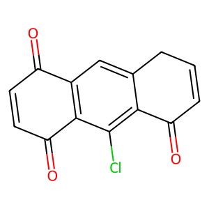 | O=C1C=CC(=O)c2c1cc1c(c2Cl)C(=O)C=CC1 | Anthrone formation step1 | |
 | O=c1ccc(=O)c2cc3c(=O)c(Cl)cc(=O)c3cc12 | | O=C1C(Cl)=CCc2cc3c(cc21)C(=O)C=CC3=O | Anthrone formation step1 | |
 | O=c1ccc(=O)c2cc3c(=O)c(Cl)cc(=O)c3cc12 | | O=C1C=C(Cl)Cc2cc3c(cc21)C(=O)C=CC3=O | Anthrone formation step1 | |
 | O=c1ccc(=O)c2cc3c(=O)c(Cl)cc(=O)c3cc12 | 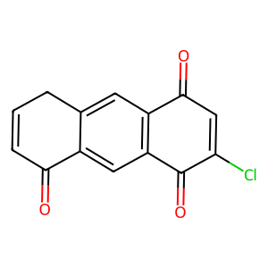 | O=C1C=CCc2cc3c(cc21)C(=O)C(Cl)=CC3=O | Anthrone formation step1 | |
 | O=c1ccc(=O)c2cc3c(=O)c(Cl)cc(=O)c3cc12 | | O=C1C=CCc2cc3c(cc21)C(=O)C=C(Cl)C3=O | Anthrone formation step1 | |